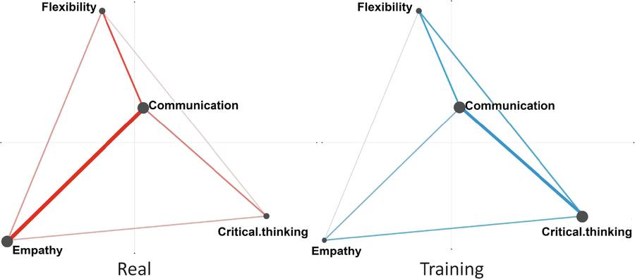
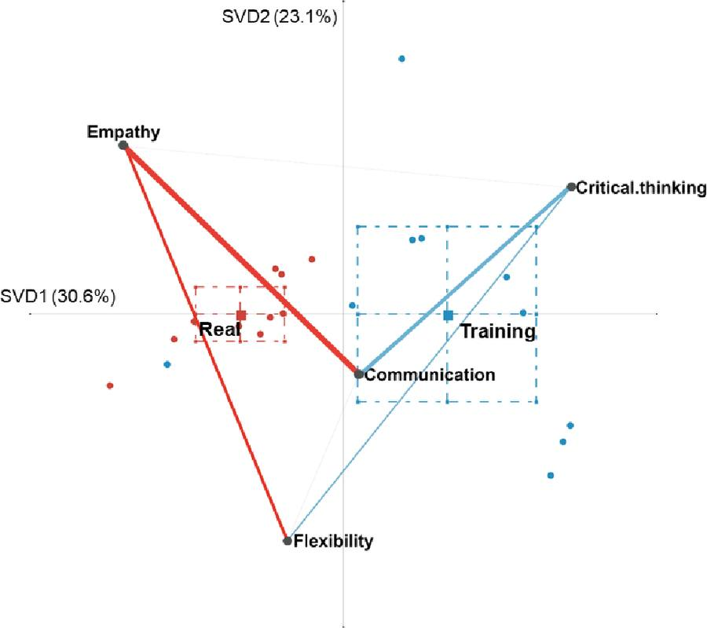
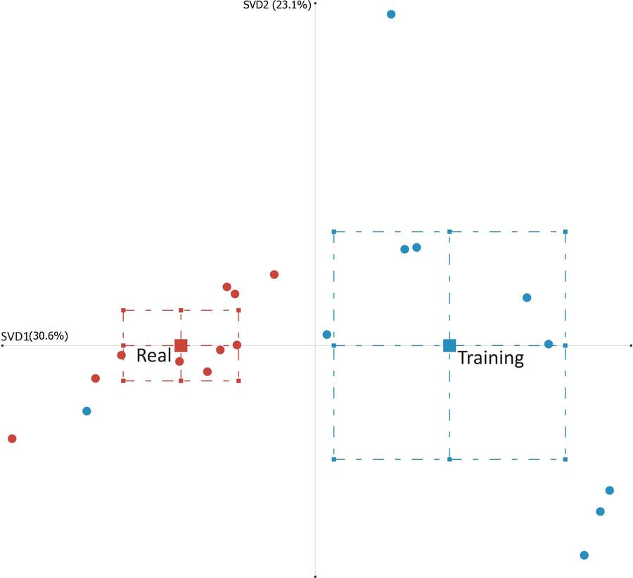

Publications · ICQE 2024 · Springer
Analyzing Nursing Assistant Attitudes Towards Geriatric Caregiving Using Epistemic Network Analysis
International Conference on Quantitative Ethnography (ICQE) 2024, CCIS vol. 2278, pp. 187–201. Springer.
Ten nursing assistants were asked, in hour-long interviews, both what their days actually look like and what their training covered. Mapping the two as networks showed the gap: on the job, empathy is what communication is built on. In training, it barely appears.
Part of the project Embodied Virtual Human Simulation for Caregiver Training
At a glance
- Interviewees10Nursing assistants, 9 female / 1 male
- Utterances coded810+Two independent raters
- Inter-rater reliability0.863 κ93.7% agreement
- Effect size1.63 Cohen’s dReal vs training, a large difference
The method in four steps
Quantitative ethnography: qualitative depth, quantified and made visual.
Interview
Ten trained caregivers, 31 open-ended questions, roughly an hour each over Zoom.
Transcribe & clean
Automated transcription, then reviewed and corrected by the research team.
Code
Each utterance marked for four concepts, twice, by two independent researchers.
Model with ENA
Code co-occurrences become a weighted network per category, compared statistically.
The four codes
- Code
Communication
Exchanging information, thoughts, feelings and needs through verbal and non-verbal interaction.
- Code
Empathy
Demonstrating deep understanding and genuine concern for the patient’s emotional and psychological experience.
- Code
Flexibility
Adaptability, versatility and openness in the care approach.
- Code
Critical thinking
Analysing, evaluating and interpreting information about the patient’s health and treatment.
What the networks showed
Both categories lean heavily on communication. What communication connects to is where they part ways.
Real experience
What the job actually looks like
- Strongest link by far: empathy ↔ communication
- Flexibility and critical thinking connect only lightly
- That empathy link pulls the network’s centre to the left
Training
What the coursework covered
- Strongest link: communication ↔ critical thinking
- Empathy is the smallest node in the network
- Its connections to the other codes are weak or nearly absent
Where the two networks sit on the first dimension
ENA score means with standard deviation along SVD1, which explains 30.6% of the variance. Two-sample t-test (unequal variance): t(11.06) = −3.05, p = 0.01, Cohen’s d = 1.63. No significant difference on the second dimension.
Data table
| Category | Mean (SVD1) | SD | N |
|---|---|---|---|
| Real experience | −0.58 | 0.60 | 10 |
| Training | 0.58 | 0.81 | 10 |
Figures from the paper



Why this study exists
Takeaway
The point of the interviews was need-finding: the team is building an immersive geriatric care simulation, and wanted to know which gaps it should close.
The answer was empathy. The paper’s recommendation is to design training scenarios in which nursing students interpret and respond to a virtual patient’s emotional state, with feedback they can reflect on afterwards.
Stated limitations: a small, exploratory sample, and caregivers’ perspectives only; older adults receiving the care were not interviewed.